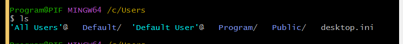

Git
Install software git
Ebbok git
Install git di windows
- masuk ke websitenya
- click di download for windows
- atur sesuai code editor
- atur :
- itu hanya di git bash saja
- bisa di command promt
- ada tambahan tool unix

Menggunakan git
- git
- seperti help
- clear
- membersihkan command sebelumnya
- git --version
- melihat versi git
Perintah dasar
3 area pada repo Git
- Working tree
- folder tempat area bekerjanya
- Staging area
- memberi tahu git sudah melakukan perubahan
- History
- kalo sudah commit akan masuk history
- 2 area ini masuk ke folder .git

Ilustrasi
- pwd
- print working directory
- ls
- melihat isi folder sekarang ada apa saja
- cd
- change directory

git init
- menginisialisasi git
kita buat file terus edit
git status
- memberikan informasi git
git add
- menambahkan ke dalam staging area
git commit
git config
git commit
- ketika commit nya panjang
- nanti akan masuk ke code editor sesuai yang kita set ketika intall git scm
- jika commit nya sedikit maka ini
- git commit -m "Menambahkan file index.html"
- -m : message
- jika kita

git add .
- untuk memindahkan semua file ke staging area
git log
- melihat apa saja yang sudah pernah dilakukan
git log -3
- melihat 3 commit terakhir
git log -- [file]
- untuk mencari commit sesuai yang dicari
- -- : untuk spesifik
git checkout
- mengambil file yang dihapus sebelumnya
- 7667b : 5 digit hash commit
- -- style.css : file yang diinginkan secara spesifik